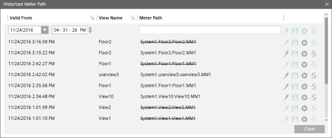

Historized Metering Path Dialog Box
The Historized Meter Path dialog box allows you to historize information related to the meter path.

Historized Meter Path Dialog Box | |
| Description |
Valid From | Date and time when the meter was created in the view |
View Name | View name where the meter is created |
Meter Path | Path of the meter in the view |
Save | Saves the details of the new path where the meter is linked |
Edit | Allows you to edit the value in the Valid From field |
Delete | Deletes an existing entry |
Mark as Deleted | Adds a strikethrough mark for a meter that is no longer associated with a view |